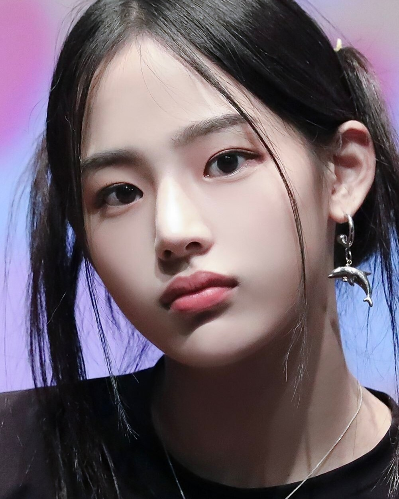
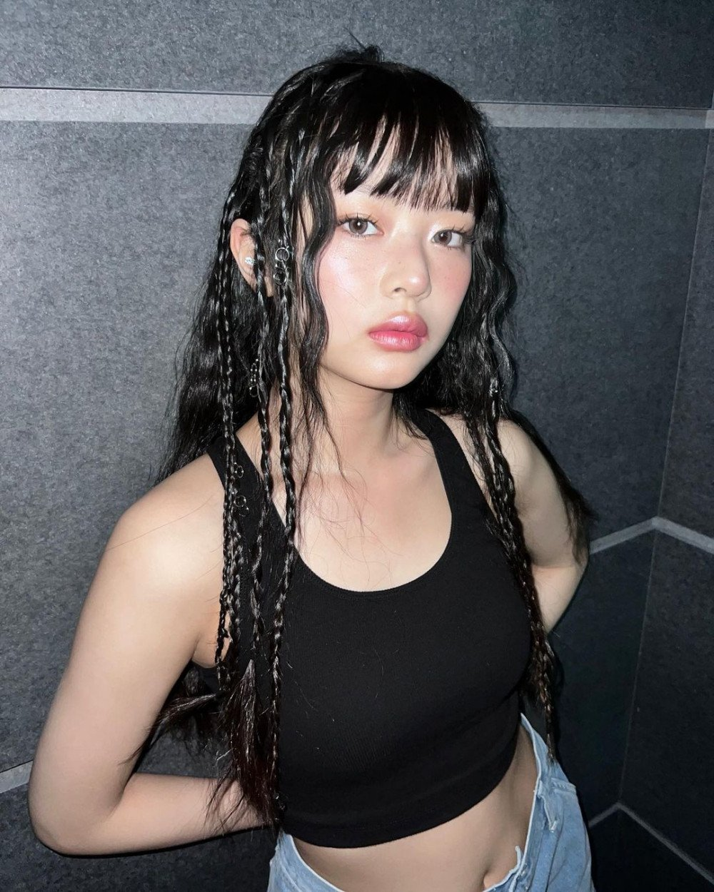
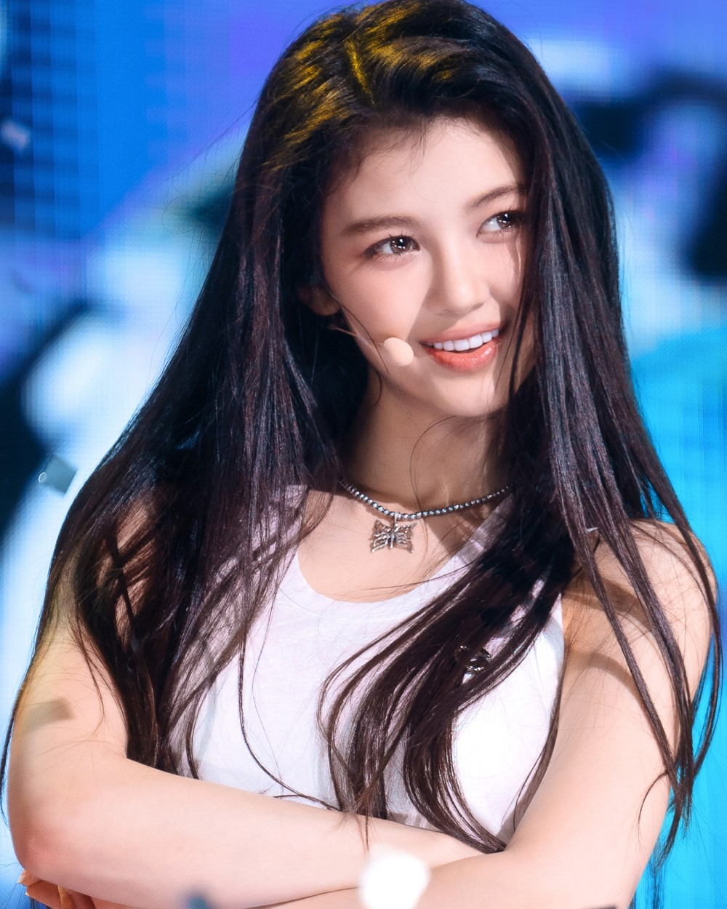
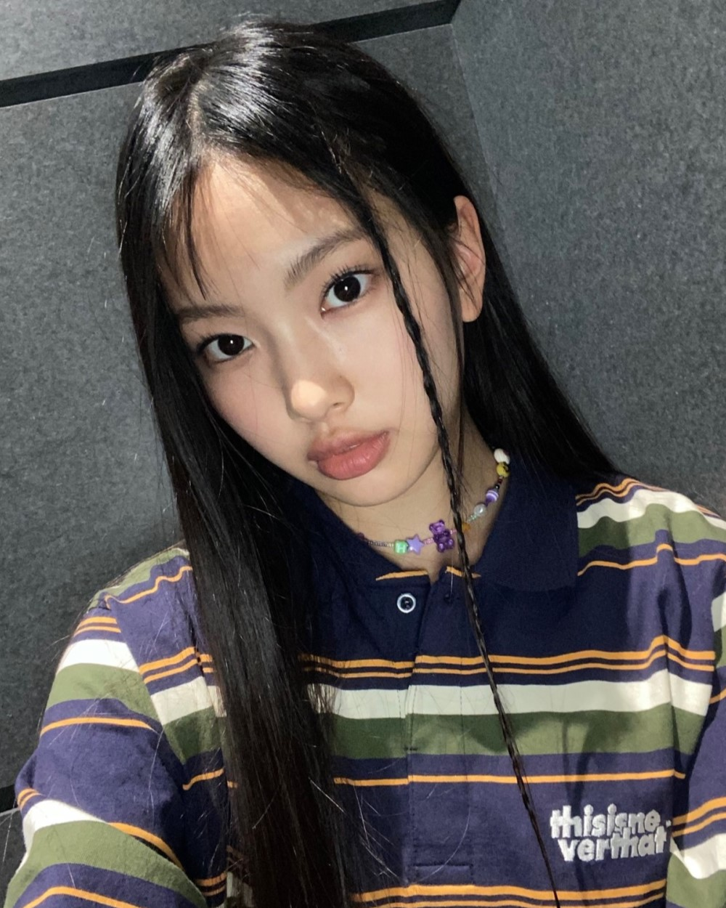

NewJeans
Debut: 2022

Minji
- Main Dancer
- Birthday: May 7, 2004
- 18 years old
- Height: 169cm (5'7")
- Zodiac sign: Taurus
- Born in Chuncheon, Gangwon, South Korea
-
Minji is the confirmed leader of NewJeans and the oldest member
at the age of 18.
- She is a former trainee at JYP Entertainment
- MBTI Type: ESTJ
-
Started off her career like most K-pop artists as a trainee
under source music, during her second year of middle school.

Hanni
- Lead Dancer
- Birthday: October 6, 2004
- 18 years old
- Born in Melbourne, Victoria, Australia
- First Vietnamese idol under HYBE
- Zodiac sign: Libra
- Height: 161cm (5'3")
- MBTI Type: INFP
- Nationality: Vietnamese-Australian
- Hanni speaks Vietnamese, English and Korean
-
She trained for two and a half years since 2020, even though she
had passed the Big Hit Global Audition in October 2019.
- Currently enrolled in Australia High School online.

Danielle
- Lead Vocals
- Birthday: April 11, 2005
- 17 years old
- Zodiac sign: Aries
- Height: 165cm (5'4")
- MBTI Type: ENFP
- Born: Newcastle, New South Wales, Australia
- Nationality: Korean-Australian
- Her father is Australian and her mother is Korean
- She began training in early 2020
-
She was a kids model as well as appearing in several kis shows
in Australia

Haerin
- Lead Vocals
- Birthday: May 15,2006
- 16 years old
- Height: 164cm (5'5")
- Zodiac sign: Taurus
- MBTI Type: ISTP
- Born: Gimcheon, Gyeongsangbuk-do, South Korea
-
Hearin attended school until her second year of middle school in
2020 umtil she dropped out to begin training where she trained
for two and a half years before debuting.

Hyein
- Sub-Vocals
- Birthday: April 21, 2008
- 14 year old
- Born: Incheon, South Korea
- Zodiac sign: Taurus
- Height: 170cm (5'6")
- MBTI Type: ENFP
-
In July of 2017 she was a member of Kids Planet's first kids'
group, U.SSo Girl, and later left the group in 2018. Later she
joined another kids group that she ended up leavig as well.
- In July of 2022 she debuted with NewJeans